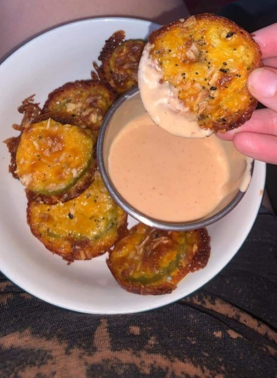

Keto Fried Pickles

Description
These are absolutely my favorite keto snack. Cheesy, crunchy, with a little bite to them. So good dipped in ranch dressing.
Ingredients:
- Regular muffin pan
- Dill pickle slices
- Shredded chedder cheese
- Cooking spray
Steps:
- Pre-heat the oven to 400 degrees.
- Take out a number of pickle slices equal to the number of openings in the muffin pan. Dry them on some paper towels
- Spray each of the openings on the muffin pan with cooking spray.
- Place a small amount of chedder cheese in each opening of the muffin pan, just enough to make a small even layer.
- Place a single pickle in each of the muffin pan openings.
- Place enough chedder cheese on top of the placed pickle to cover it with an even layer.
- Place in the oven for 20 minutes.
- Once cooked let sit in the muffin pan for 3-5 minutes to set. Then remove to paper towels to drain/dry.
- Serve with ranch dressing for dipping.